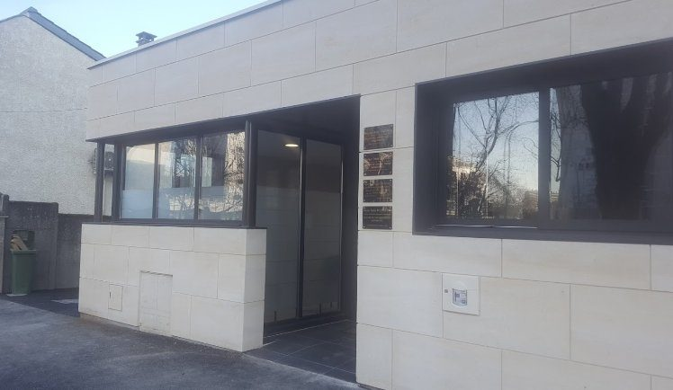

L'entrée du cabinet, 159 boulevard Godard.
159 boulevard Godard
33110 Le Bouscat
Ouvert maintenant · jusqu'à 18h30
Téléphone :
05 56 44 84 93
Itinéraire
Copier l'adresse
Horaires
Lundi
9h00–12h30 · 14h00–18h30
Mardi
9h00–12h30 · 14h00–18h30
Mercredi
9h00–12h30 · 14h00–18h30
Jeudi
9h00–12h30 · 14h00–18h30
Vendredi
9h00–12h30 · 14h00–18h30
Samedi
Fermé
Dimanche
Fermé
Accès
Bus 9, arrêt « Ampère »
Tram C, arrêts « Grand Parc » ou « Ravezies »
Pas de parking à proximité : privilégiez les deux-roues ou les transports en commun.